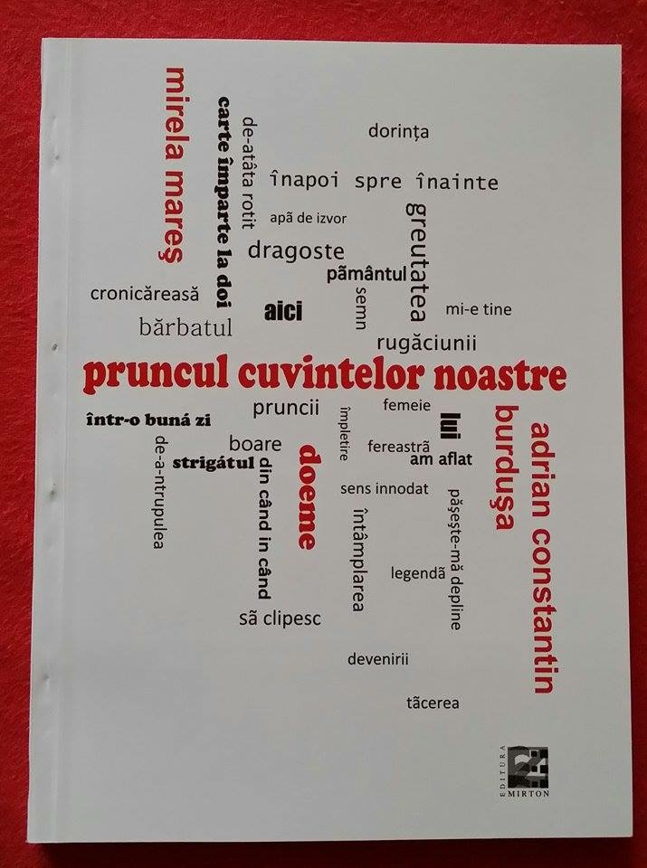

„Frunza nu cade ca să moară,
ci ca să învețe pământul să respire din nou."
Violeta-Mirela Mareș scrie cu o mână care nu apasă, ci mângâie. Poezia ei nu strigă, ci șoptește. Nu explică, ci lasă să se înțeleagă.

din „Toamna descheiată la plopi", 2025
din „Toamna descheiată la plopi", 2025
din „Toamna descheiată la plopi", 2025
din „Toamna descheiată la plopi", 2025
din „Toamna descheiată la plopi", 2025
· alte poeme urmează ·
din „Pruncul cuvintelor noastre", 2015
din „Pruncul cuvintelor noastre", 2015
din „Pruncul cuvintelor noastre", 2015
· alte poeme urmează ·
Toamna nu vine doar în arbori. Ea se strecoară în oameni, în gesturi, în cuvinte. Se deschide încet, ca o rană care nu doare, ca o pleoapă care se închide spre vis. Întomnarea nu e sfârșit, ci începutul unei tăceri fertile, în care sensurile se coc și se desprind de ram.
Violeta-Mirela Mareș scrie cu o mână care nu apasă, ci mângâie. Poezia ei nu strigă, ci șoptește. Nu explică, ci lasă să se înțeleagă. Autoarea a cinci volume de poezie publicate între 1999 și 2025.
Fiecare poem e o frunză care cade în suflet, lăsând o urmă de dor, de întrebare, de lumină.
— Timișoara, septembrie 2025